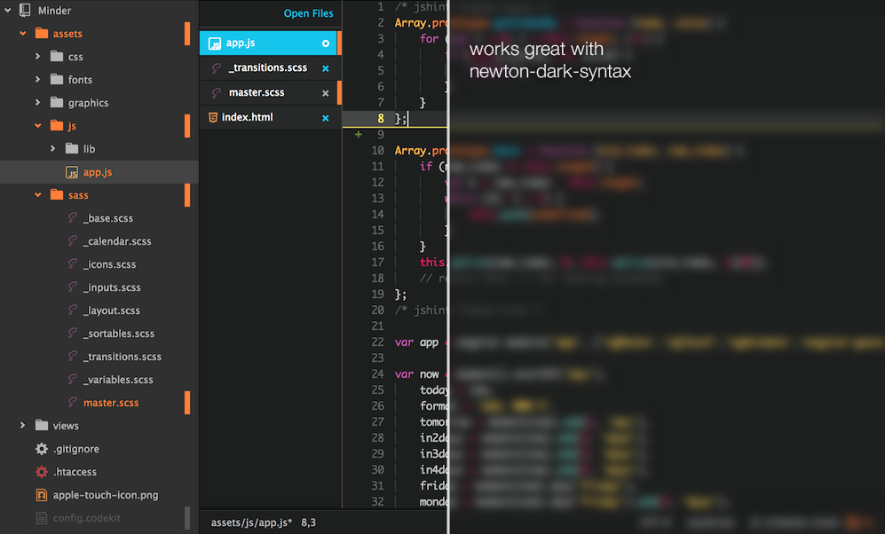
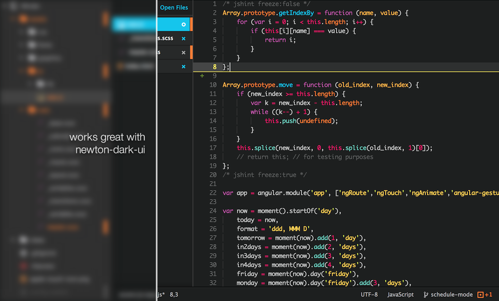

Another dark UI theme for Atom
This theme is based on the Atom Dark UI theme, but has vertical file tabs and can be activated by going to
the Themes section in the Settings view (cmd-,) and selecting it from the
UI Themes drop-down menu.

Use the Newton Dark Syntax syntax theme for more newtonian goodness.
